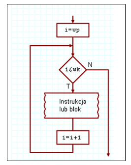
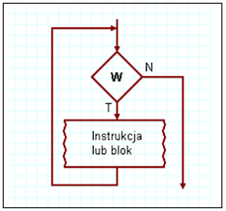
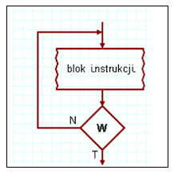

Opis: Pętla for wykonuje się określoną liczbę razy. Nadaje się najlepiej do sytuacji, w których z góry znamy liczbę iteracji.
for (int i = 0; i < 5; i++) {
cout << i << endl;
}Schemat blokowy:
Opis: Pętla while najpierw sprawdza warunek, a dopiero potem wykonuje blok instrukcji. Może się nie wykonać ani razu.
int i = 0;
while (i < 5) {
cout << i << endl;
i++;
}Schemat blokowy:
Opis: Pętla do while najpierw wykona blok instrukcji, a potem sprawdzi warunek. Wykona się co najmniej raz.
int i = 0;
do {
cout << i << endl;
i++;
} while (i < 5);Schemat blokowy:
